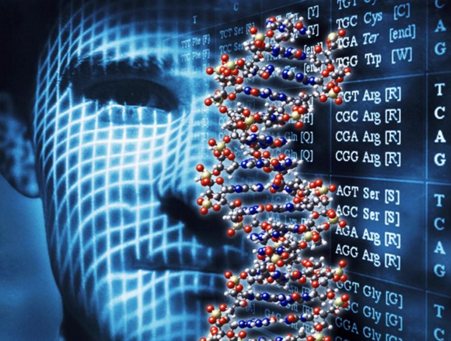
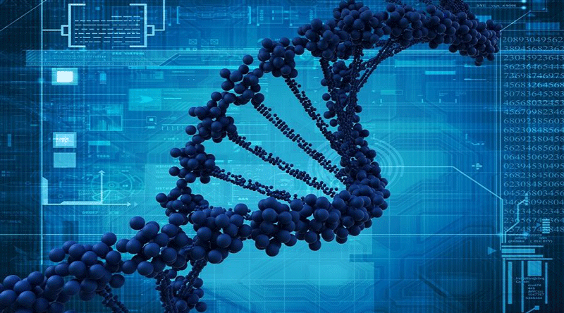
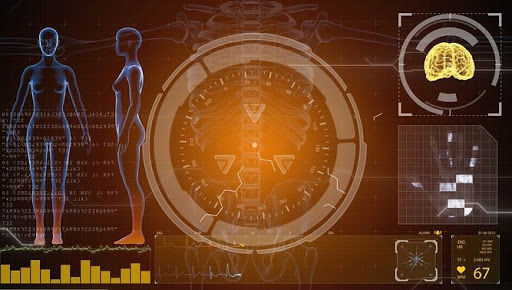

BIOINFORMÁTICA
La Bioinformática es una subdisciplina de la biología y las ciencias computacionales que se encarga de adquirir,
almacenar, analizar y diseminar la información biológica, en gran parte correspondiente a las secuencias de ADN
y aminoácidos. La Bioinformática usa programas informáticos que tienen muchas aplicaciones, como por ejemplo:
determinar las funciones de genes y proteínas, establecer relaciones evolutivas y predecir la conformación tridimensional
de las proteínas.

Se centra en el desarrollo de herramientas prácticas para la gestión de datos y el análisis
(por ejemplo, la presentación de información genómica y análisis secuencial), pero con menor
énfasis en la eficiencia y en la precisión.